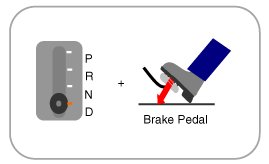
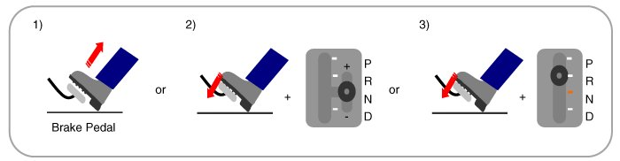
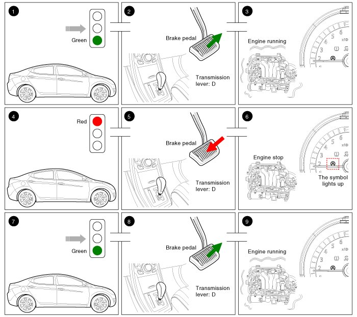
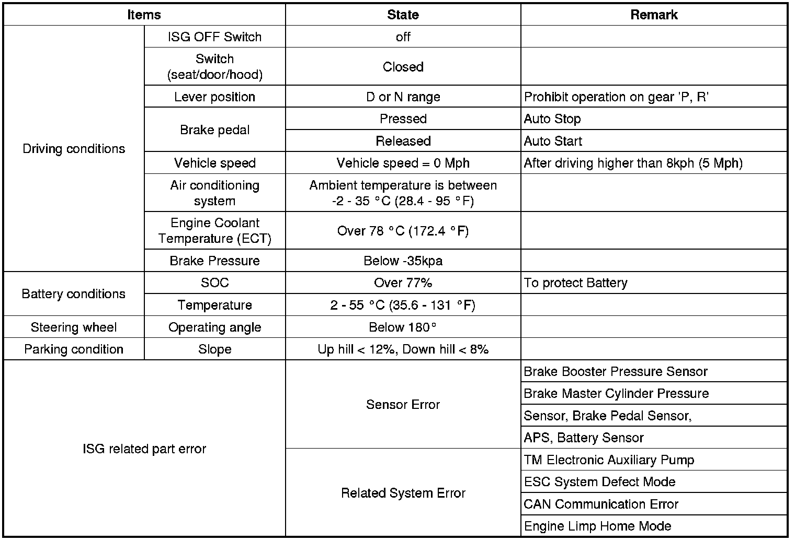
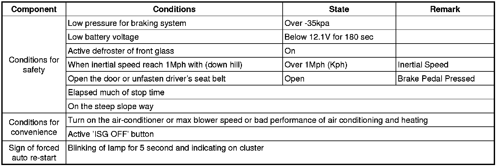
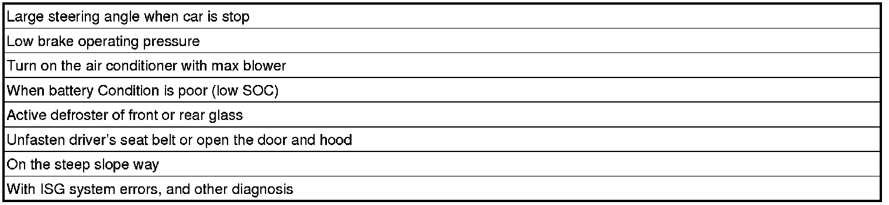

ISG (Idle Stop & Go) System
Description
Idle Stop & Go (ISG) function automatically switches off the engine when the car is at a standstill if the and starts it again as soon as the brake pedal is released. This not only reduces fuel consumption, it also lowers emissions. Idle Stop & Go (ISG) function also has a built-in sensitivity to driving safety and comfort.
The engine is not switched off if certain conditions relating to safety and comfort have not been fulfilled (For example, when the engine oil is still cold, when the battery is running low or when the outside temperature is below 3°C). It can be deactivated by pressing the ISG OFF switch on the crash pad lower panel.
Sample scenario: switching off the engine at a standstill at a red traffic light or in stop-and-go traffic.
How to use:
1. Engine Auto-Stop: D-range + brake pedal is pressed.

2. Engine Auto-Start
(1) Brake pedal is released.
(2) Brake pedal is pressed + Manual range (Sports mode)
(3) Brake pedal is pressed + R range

Operation

1. Vehicle moving.
2. The transmission lever position is D-range. The brake pedal is released.
3. The engine is running. (Vehicle moving).
4. The driver brakes until the vehicle comes to a standstill.
5. The transmission lever position is D-range. The brake pedal is pressed
6. The engine stops. The symbol "AUTO STOP" lights up in the instrument cluster.
7. The driver wants to continue the journey.
8. The transmission lever position is D-range. The brake pedal is released.
9. The engine is running again. The symbol goes out.
Operation Condition for the ISG function
1. Auto stop or Auto start condition (If all of the below condition are satisfied)

2. Forced re-start conditions (If any of the below condition is not satisfied)

3. Restriction conditions for Auto-Stop operation
** To protect system and safety auto-stop system is restricted below the conditions

4. Restriction condition for auto Re-Start operation
5. Restriction condition for OBD Check & Emission control
CAUTION:
The ISG system is strongly networked with the power management. In the event of battery replacement, disconnection of the battery terminal or after changing the engine management system, the reference data regarding the battery charge state and battery condition can be lost.
They are only available again a closed-circuit current measurement of approximate 4 hours in which the vehicle may not be wakened. In this time, the ISG system is inactive.
CAUTION:
ISG system deactivation by fault.
- Fault in communication line (LIN/CAN)
Fault Electric oil pump
Fault ESC System
Fault Limp home mode
- Fault brake booster vacuum pressure sensor
Fault Brake master cylinder pressure sensor
Fault Brake pedal switch
Fault Battery sensor
When the ISG related sensors or system error occurs, the ISG OFF switch lights up. Especially when the battery sensor is replaced or reinstalled, the vehicle must be placed in the ignition switch OFF for about 4 hours for recalibration.
The ISG function is operated about 4 hours later normally. But in the case of first 25 times, the ISG function can be operated regardless of recalibration.
WARNING:
When the engine is in Idle stop mode, it's possible to restart the engine without the driver taking any action.
Before leaving the car or doing anything in the engine room area, stop the engine by turning the ignition key to the LOCK position or removing it.